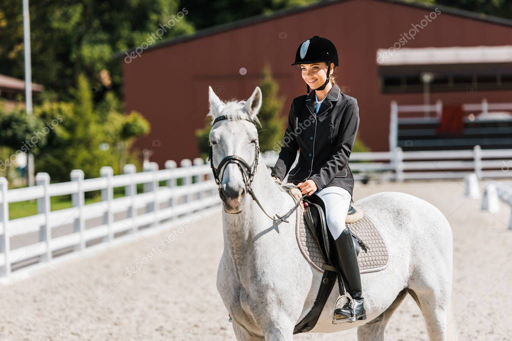
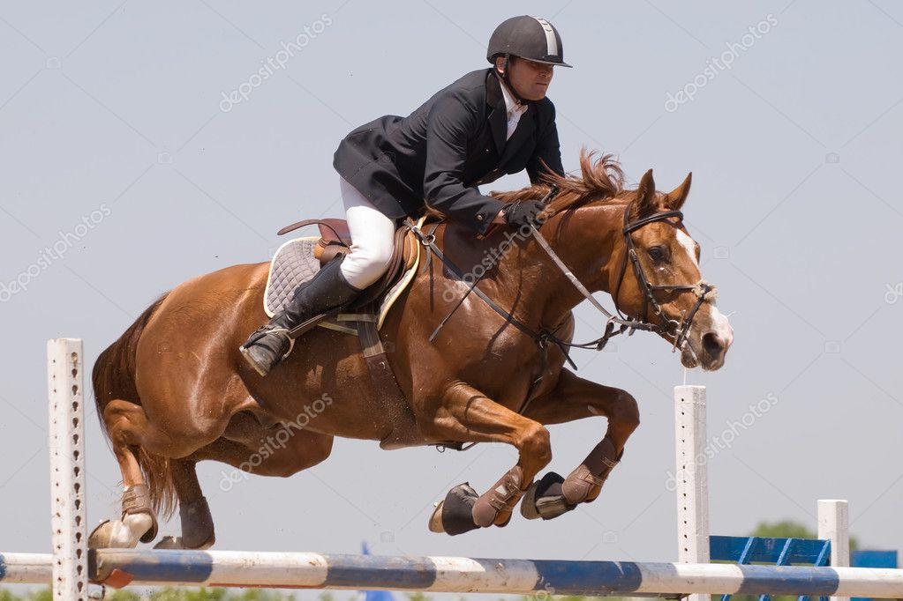

This website provides insight into the world of equestrianism! A sport that many know know little about, but that is so broad! The variations of riding allow for it to be accessible to many different ages, from young to old. Though horses and riding can be expensive, there are ways to work with the sport in order to profit or save. Riding can be benefical in so many different ways and if only it was a more popular sport more people would try it, it truly is a blast.
From western to English riding, riding happens in so many different ways. There is bareback, with no saddle. Dressage, show jumping, flat, and racing within English style. Western includes events such as roping, barrel racing, and reining. In the horse world, breeding shows and carrage shows are also popular. There is also riding just as simple as trail riding!
 | Type of Riding | Description | Tack/Gear Used |
|---|---|---|
| Western Riding | Long stirrups, upright posture, one-handed hold on reins | Western saddle, cowboy boots, western bridles |
| English Riding | Has several different disciplines, including dressage, show jumping, and eventing | English bridle, english saddle, black leather boots |
| Jumpers | Type of show jumping that is judged on how quickly the course is completed and how many faults there are throughout the course | Basic english tack |
| Hunters | Split up amount many different classes, judged on style, movement, form, and overall picture | Basic english tack |
| Dressage | "Horse ballet" Riding a horse in a manner that develops obedience, flexibility, and balance | Dress boots, dressage saddle |